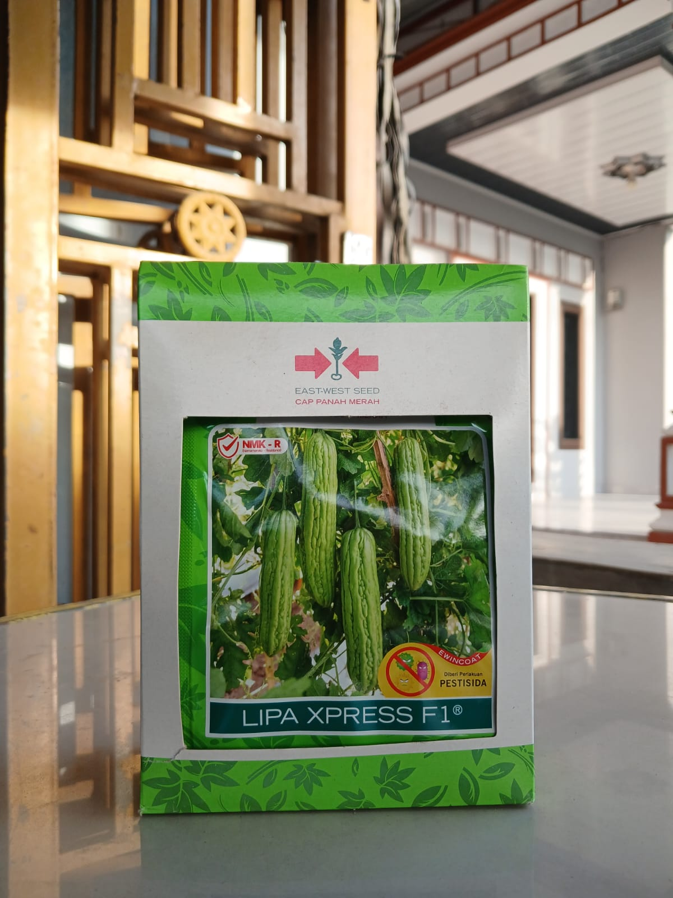

Stok TersediaBibit Pare varietas Lipa Xpress F1 merupakan paria hibrida produksi East West Seed (Cap Panah Merah) dengan warna hijau segar dan daya adaptasi yang luas, cocok ditanam di tanah berpasir maupun liat pada musim hujan ataupun kemarau. Bentuk buah silindris dengan ujung menumpul, bertekstur keras dan toleran terhadap retak. Tahan terhadap penyakit layu Fusarium, bercak mata kodok, dan embun bulu.
| Jenis | Paria Hibrida (Varietas Lipa Xpress F1) |
| Produsen | East West Seed (Cap Panah Merah) |
| Kemasan | 1 bungkus |
| Umur Panen | 42-45 hari setelah tanam |
| Bobot per Buah | 200-250 gram |
| Potensi Hasil | 3-4 kg/tanaman (35-40 ton/ha) |
| Cocok untuk | Dataran Rendah - Menengah |